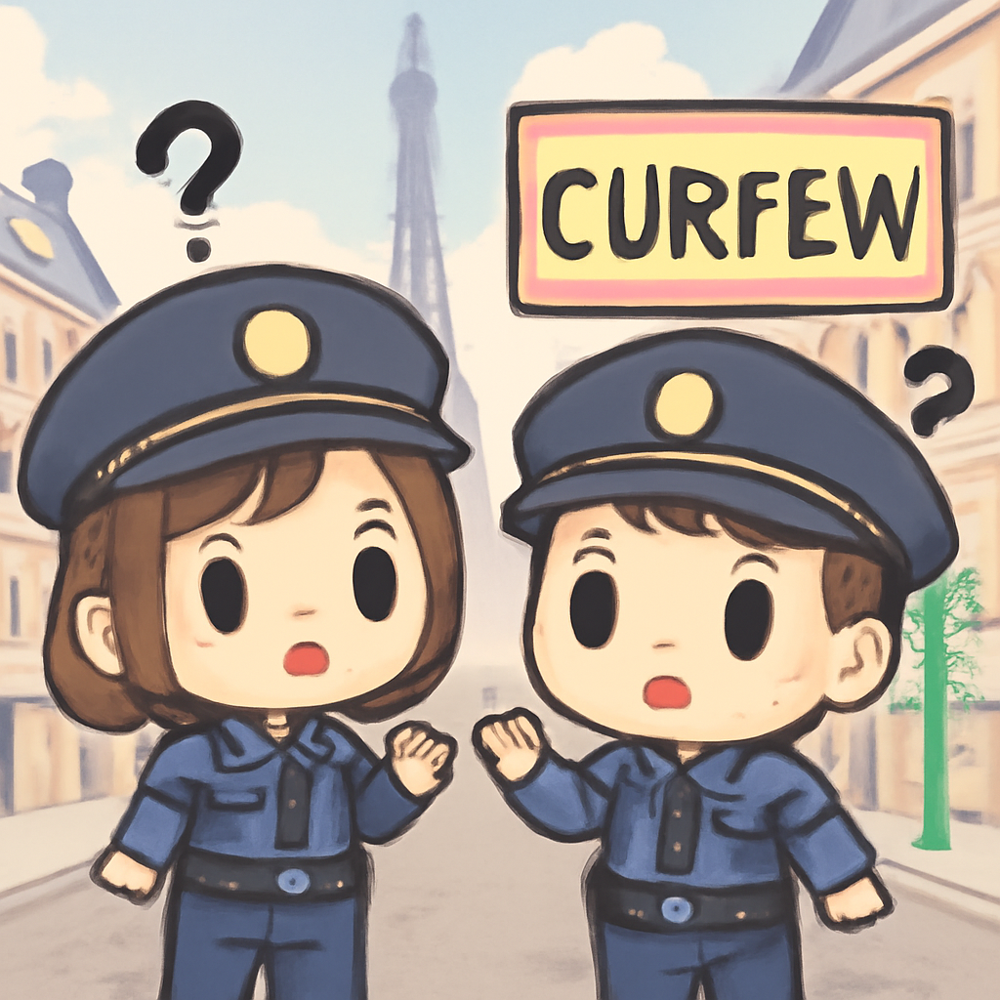

其一 · 法國巴黎 · 全國暴動後實施宵禁
法國多城因暴動實施宵禁，警方承認失控

近日，法國巴黎及多個城市因暴動而實施宵禁，內政部長承認警方在部分地區失控。這波暴動導致社會緊張加劇，民眾的安全感受到威脅，政府的治理能力也受到挑戰。希望宵禁能讓大家好好睡一覺，不要再鬧事了。
🔗 原始新聞 ↗
2026-10-20 · 以古觀今，以笑抗愁
法國多城因暴動實施宵禁，警方承認失控

近日，法國巴黎及多個城市因暴動而實施宵禁，內政部長承認警方在部分地區失控。這波暴動導致社會緊張加劇，民眾的安全感受到威脅，政府的治理能力也受到挑戰。希望宵禁能讓大家好好睡一覺，不要再鬧事了。
🔗 原始新聞 ↗
烏克蘭官員批評美方限制情報分享，導致傷亡
烏克蘭基輔，隨著美國限制對烏克蘭的情報分享，烏克蘭官員表示這導致了很多預警失誤，造成平民傷亡。這不僅影響了战争進程，也讓烏克蘭的安全形勢更加堪憂。希望未來能有更多透明的合作，讓大家能活得更安全一些。
🔗 原始新聞 ↗
肯亞邪教領袖因191宗謀殺案被判罪，受害者多為兒童
肯亞，邪教領袖保羅·麥肯齊因191宗謀殺罪被判有罪，其中大部分受害者是無辜的孩子。這起案件震驚了社會，揭示了信仰背後的黑暗與悲劇。希望這能讓社會更加警惕，避免類似悲劇重演。
🔗 原始新聞 ↗
胡塞武裝導彈襲擊也門訓練營，造成大量傷亡
也門，胡塞武裝對政府控制的沙布瓦省訓練營發動導彈襲擊，造成至少50名安全部隊新兵喪生。這場襲擊加劇了當地的安全不穩定，讓人擔心戰爭的陰霾依然未散。希望和平能早日重回這片土地。
🔗 原始新聞 ↗
德州大學美式足球賽前空降表演出意外，一名空軍人員喪生
在德州一場大學美式足球賽前的空降表演中，一名美國空軍人員發生意外不幸喪生。這起事件讓運動賽事的氣氛瞬間變得嚴肅，大家對於安全的重視再次提升。希望未來活動能更安全，大家能安心享受運動的樂趣。
🔗 原始新聞 ↗